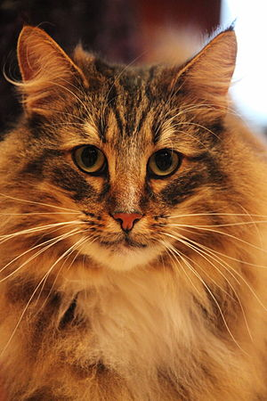

노르웨이 숲 고양이(Norwegian forest cats)은 고양이의 한 품종이다. 노르웨이 숲 고양이는 자연발생종으로 시작하여 품종개량 과정들을 거쳐 오늘에 이르렀다. 노르웨이 숲 고양이는 엄연히 품종개량을 거친 품종묘이므로, 노르웨이에 있는 일반 고양이들과는 다르다. 노르웨이가 원산지인 고양이로 추운 환경에 잘 적응한 품종이다. 긴 털이 몸 전체를 덮고있고, 겨울에는 특히 추위를 막을 수 있도록 털이 더 촘촘하게 난다.
노르웨이 숲 고양이의 강하고 튼튼한 몸과 두꺼운 코트는 스칸디나비아에서 수세기에 걸쳐 발전해 왔다는 증거이다. 그들은 바이킹과 함께 여행하며 그들의 배와 마을이 해를 입지 않게 했다. Skogkatt이라고 불리는 노르웨이 숲 고양이는 바이킹의 전설과 신화에 등장한다. 20 세기 경 노르웨이 숲 고양이는 본토에서 희귀해져 멸종 위기에 처했다. 그리하여 1930 년대에 노르웨이 숲 고양이의 미래를 보장하기 위한 계획이 시작되었지만 2차 세계 대전으로 인하여 중단되었다. 드디어 1970 년대에 노르웨이인들은 품종을 보호하기 위해 특별한 육종 프로그램을 시행했으며 후에, 올라프 왕이 노르웨이 숲 고양이를 노르웨이의 공식 고양이라고 지명했을 때 품종은 왕실 인정을 받았다. 1977년에 FIFe에서, 1984년에 TICA에서, 1987년에 CFA에서 각각 순종 고양이로 인정받았다.
다소 긴 털이 몸 전체를 덮고 있으며 속 털이 빽빽하고 겉 털이 풍성하다. 여름과 겨울에 털의 밀도에 차이가 있으며 특히 겨울에는 목 부분에 길고 화려한 털이 촘촘하게 나며 귀 안쪽에 바람과 눈을 막아주는 역할을 하는 긴 털이 나 귀 주변과 바깥쪽으로 휘어 나온다. 털의 색은 매우 다양하며 흰색부터 검은색까지 거의 모든 색을 가지며 무늬가 있는 것도 있다. 몸의 끝 부분에만 색이 다른 것도 있다. 어두운 색의 노르웨이숲고양이는 털의 양이 약간 적은 편이다. 아몬드형의 눈은 끝부분이 비스듬하게 올라가 있으며 귀 끝쪽에 약간 긴 털이 나 있는 경우도 있다. 단단하고 늘씬한 체형이며 암컷은 수컷에 비하여 크기가 작은 편이다.
지능적이고 지략이 뛰어난 노르웨이 숲 고양이는 새로운 환경에 쉽게 적응할 수 있는 온화한 품종이다. 노르웨이 숲 고양이는 가족들과 함께 있는 것을 즐기고 놀기를 좋아하는 대화형 고양이이다. 한국에서는 산책냥이로 알려졌다.
|  |
|---|
| 계:동물계 |
| 문:척삭동물문 |
| 강:포유강 |
| 목:식육목 |
| 과:고양잇과 |